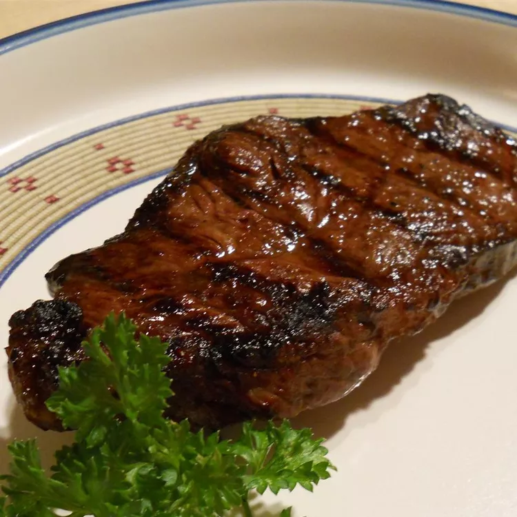

Steak Marinade

Fried chicken is a popular dish made by coating chicken pieces with a seasoned batter
or breading and then deep-frying or pan-frying them until they are golden brown and crispy.
- ¼ cup olive oil
- ¼ cup balsamic vinegar
- ¼ cup Worcestershire sauce
- ¼ cup soy sauce
- 2 teaspoons Dijon mustard
- 2 teaspoons minced garlic
- 1 pinch salt and pepper to taste
- Mix olive oil, balsamic vinegar, Worcestershire sauce, soy sauce, Dijon mustard, and garlic in a small bowl.
- Season with salt and pepper.